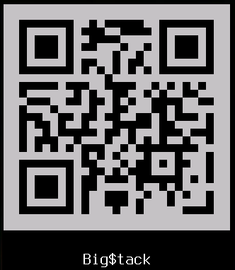
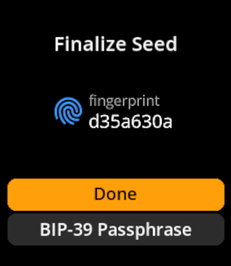
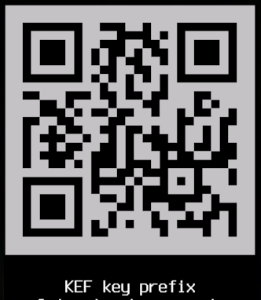

<!-- END `github.com/gnab/remark` HEADER BOILERPLATE --> ### Following is a BIP-39 mnemonic. ##### Is it a 24-word compact SeedQR? ##### Is it a 12-word encrypted mnemonic? #### Without passphrase, which BIP-32 wallet is the *real* one? <table><tr><td rowspan="6"> <p></p> </td><td> A) mfp: <b>d35a630a</b><br /> as compact SeedQR </td><tr><td> B) mfp: <b>5549b700</b>, decrypted with:<br /> <i>"bacon*11+because"</i> </td></tr><tr><td> C) mfp: <b>f7dbee5f</b>, decrypted with: <br /> <i>"15c17ee"</i> </td></tr><tr><td> D) mfp: <b>cc8afcb3</b>, decrypted with:<br /> <i>"My $#ron6 Dcryption Qu@y! 13cfb17"</i> </td></tr><tr><td> E) <b>All of the above</b> </td></tr><tr><td> F) <b>None of the above</b> </td></tr></table> --- ### Following is a BIP-39 mnemonic. ##### Is it a 24-word compact SeedQR? ##### Is it a 12-word encrypted mnemonic? #### Without passphrase, which BIP-32 wallet is the *real* one? <table><tr><td rowspan="6"> <p></p> </td><td bgcolor="black"> <font color="orange"> A) mfp: <b>d35a630a</b><br /> as compact SeedQR </font> </td><tr><td> B) mfp: <b>5549b700</b>, decrypted with:<br /> <i>"bacon*11+because"</i> </td></tr><tr><td> C) mfp: <b>f7dbee5f</b>, decrypted with: <br /> <i>"15c17ee"</i> </td></tr><tr><td> D) mfp: <b>cc8afcb3</b>, decrypted with:<br /> <i>"My $#ron6 Dcryption Qu@y! 13cfb17"</i> </td></tr><tr><td> E) <b>All of the above</b> </td></tr><tr><td> F) <b>None of the above</b> </td></tr></table> --- ### Following is a BIP-39 mnemonic. ##### Is it a 24-word compact SeedQR? ##### Is it a 12-word encrypted mnemonic? #### Without passphrase, which BIP-32 wallet is the *real* one? <table><tr><td rowspan="6"> </td><td bgcolor="black"> <font color="orange"> A) mfp: <b>d35a630a</b><br /> as compact SeedQR </font> </td><tr><td> B) mfp: <b>5549b700</b>, decrypted with:<br /> <i>"bacon*11+because"</i> </td></tr><tr><td> C) mfp: <b>f7dbee5f</b>, decrypted with: <br /> <i>"15c17ee"</i> </td></tr><tr><td> D) mfp: <b>cc8afcb3</b>, decrypted with:<br /> <i>"My $#ron6 Dcryption Qu@y! 13cfb17"</i> </td></tr><tr><td> E) <b>All of the above</b> </td></tr><tr><td> F) <b>None of the above</b> </td></tr></table> --- ### Following is a BIP-39 mnemonic. ##### Is it a 24-word compact SeedQR? ##### Is it a 12-word encrypted mnemonic? #### Without passphrase, which BIP-32 wallet is the *real* one? <table><tr><td rowspan="6"> </td><td> A) mfp: <b>d35a630a</b><br /> as compact SeedQR </td><tr><td bgcolor="black"> <font color="orange"> B) mfp: <b>5549b700</b>, decrypted with:<br /> <i>"bacon*11+because"</i> </font> </td></tr><tr><td> C) mfp: <b>f7dbee5f</b>, decrypted with: <br /> <i>"15c17ee"</i> </td></tr><tr><td> D) mfp: <b>cc8afcb3</b>, decrypted with:<br /> <i>"My $#ron6 Dcryption Qu@y! 13cfb17"</i> </td></tr><tr><td> E) <b>All of the above</b> </td></tr><tr><td> F) <b>None of the above</b> </td></tr></table> --- ### Following is a BIP-39 mnemonic. ##### Is it a 24-word compact SeedQR? ##### Is it a 12-word encrypted mnemonic? #### Without passphrase, which BIP-32 wallet is the *real* one? <table><tr><td rowspan="6"> </td><td> A) mfp: <b>d35a630a</b><br /> as compact SeedQR </td><tr><td> B) mfp: <b>5549b700</b>, decrypted with:<br /> <i>"bacon*11+because"</i> </td></tr><tr><td bgcolor="black"> <font color="orange"> C) mfp: <b>f7dbee5f</b>, decrypted with: <br /> <i>"15c17ee"</i> </font> </td></tr><tr><td> D) mfp: <b>cc8afcb3</b>, decrypted with:<br /> <i>"My $#ron6 Dcryption Qu@y! 13cfb17"</i> </td></tr><tr><td> E) <b>All of the above</b> </td></tr><tr><td> F) <b>None of the above</b> </td></tr></table> --- ### Following is a BIP-39 mnemonic. ##### Is it a 24-word compact SeedQR? ##### Is it a 12-word encrypted mnemonic? #### Without passphrase, which BIP-32 wallet is the *real* one? <table><tr><td rowspan="6"> </td><td> A) mfp: <b>d35a630a</b><br /> as compact SeedQR </td><tr><td> B) mfp: <b>5549b700</b>, decrypted with:<br /> <i>"bacon*11+because"</i> </td></tr><tr><td> C) mfp: <b>f7dbee5f</b>, decrypted with: <br /> <i>"15c17ee"</i> </td></tr><tr><td bgcolor="black"> <font color="orange"> D) mfp: <b>cc8afcb3</b>, decrypted with:<br /> <i>"My $#ron6 Dcryption Qu@y! 13cfb17"</i> </font> </td></tr><tr><td> E) <b>All of the above</b> </td></tr><tr><td> F) <b>None of the above</b> </td></tr></table> --- ### Following is a BIP-39 mnemonic. ##### Is it a 24-word compact SeedQR? ##### Is it a 12-word encrypted mnemonic? #### Without passphrase, which BIP-32 wallet is the *real* one? <table><tr><td rowspan="6"> <p></p> </td><td> A) mfp: <b>d35a630a</b><br /> as compact SeedQR </td><tr><td> B) mfp: <b>5549b700</b>, decrypted with:<br /> <i>"bacon*11+because"</i> </td></tr><tr><td> C) mfp: <b>f7dbee5f</b>, decrypted with: <br /> <i>"15c17ee"</i> </td></tr><tr><td bgcolor="black"> <font color="orange"> D) mfp: <b>cc8afcb3</b>, decrypted with:<br /> <i>"My $#ron6 Dcryption Qu@y! 13cfb17"</i> </font> </td></tr><tr><td> E) <b>All of the above</b> </td></tr><tr><td> F) <b>None of the above</b> </td></tr></table> --- ### Following is a BIP-39 mnemonic. ##### Is it a 24-word compact SeedQR? ##### Is it a 12-word encrypted mnemonic? #### Without passphrase, which BIP-32 wallet is the *real* one? <table><tr><td rowspan="6"> </td><td> A) mfp: <b>d35a630a</b><br /> as compact SeedQR </td><tr><td> B) mfp: <b>5549b700</b>, decrypted with:<br /> <i>"bacon*11+because"</i> </td></tr><tr><td> C) mfp: <b>f7dbee5f</b>, decrypted with: <br /> <i>"15c17ee"</i> </td></tr><tr><td bgcolor="black"> <font color="orange"> D) mfp: <b>cc8afcb3</b>, decrypted with:<br /> <i>"My $#ron6 Dcryption Qu@y! 13cfb17"</i> </font> </td></tr><tr><td> E) <b>All of the above</b> </td></tr><tr><td> F) <b>None of the above</b> </td></tr></table> --- ### Following is a BIP-39 mnemonic. ##### Is it a 24-word compact SeedQR? ##### Is it a 12-word encrypted mnemonic? #### Without passphrase, which BIP-32 wallet is the *real* one? <table><tr><td rowspan="6"> </td><td> A) mfp: <b>d35a630a</b><br /> as compact SeedQR </td><tr><td> B) mfp: <b>5549b700</b>, decrypted with:<br /> <i>"bacon*11+because"</i> </td></tr><tr><td> C) mfp: <b>f7dbee5f</b>, decrypted with: <br /> <i>"15c17ee"</i> </td></tr><tr><td> D) mfp: <b>cc8afcb3</b>, decrypted with:<br /> <i>"My $#ron6 Dcryption Qu@y! 13cfb17"</i> </td></tr><tr><td bgcolor="black"> <font color="orange"> E) <b>All of the above</b> </font> </td></tr><tr><td> F) <b>None of the above</b> </td></tr></table> --- ### Following is a BIP-39 mnemonic. ##### Is it a 24-word compact SeedQR? ##### Is it a 12-word encrypted mnemonic? #### Without passphrase, which BIP-32 wallet is the *real* one? <table><tr><td rowspan="6"> </td><td> A) mfp: <b>d35a630a</b><br /> as compact SeedQR </td><tr><td> B) mfp: <b>5549b700</b>, decrypted with:<br /> <i>"bacon*11+because"</i> </td></tr><tr><td> C) mfp: <b>f7dbee5f</b>, decrypted with: <br /> <i>"15c17ee"</i> </td></tr><tr><td> D) mfp: <b>cc8afcb3</b>, decrypted with:<br /> <i>"My $#ron6 Dcryption Qu@y! 13cfb17"</i> </td></tr><tr><td> E) <b>All of the above</b> </td></tr><tr><td bgcolor="black"> <font color="orange"> F) <b>None of the above</b> </font> </td></tr></table> <!-- BEGIN `github.com/gnab/remark` FOOTER BOILERPLATE -->